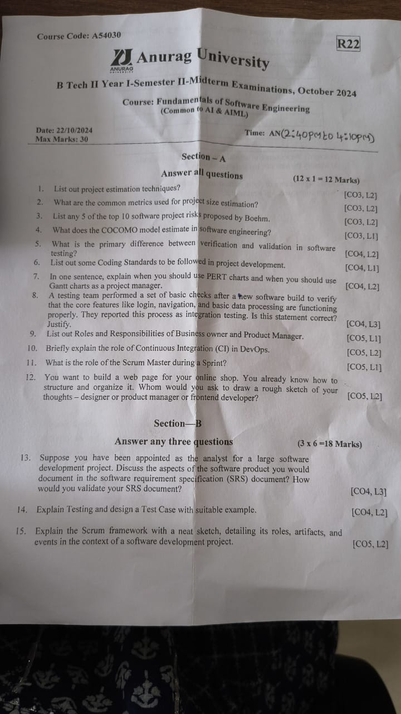
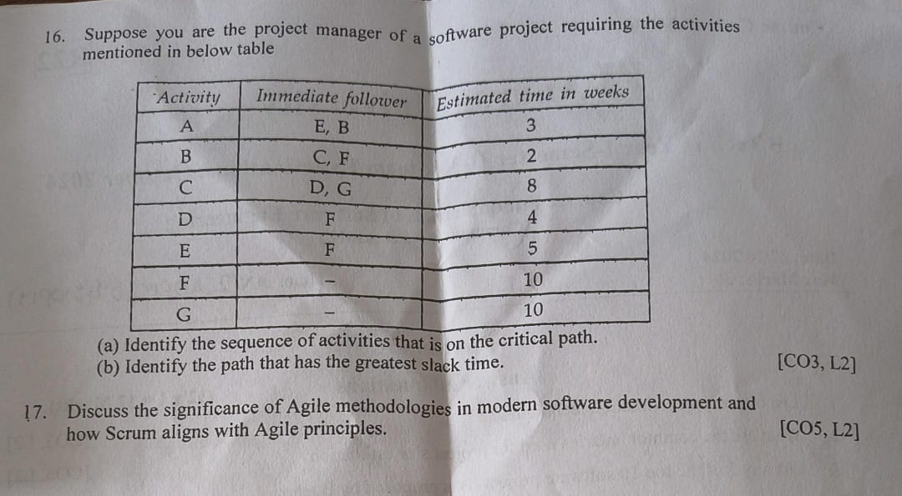

Fundamentals of Software Engineering
Course Information Sheet
Subject: Fundamentals of Software Engineering
Academic Year: 2024–25
Faculty: Dr. M. Trupthi & Mr. S Rajeshwar
Dept: AI & AIML, Anurag University
Year/Sem: II Year / I Sem
Credits: 3 | Code: A54030 | Regulation: R22
Course Instructors
- Dr. M. Trupthi – Associate Professor, AI & AIML Dept
- Mr. S. Rajeshwar – Assistant Professor, AI & AIML Dept
Contact details and consultation hours will be provided during class sessions.
Unit I
- Introduction: Evolution from an Art Form to an Engineering Discipline, Software Development Projects, Emergence of Software Engineering: Notable Changes in Software Development Practices, Computer Systems Engineering
Unit II
- Software Life Cycle Models: A Few Basic Concepts, Waterfall Model and its Extensions— (Iterative, V Model, Prototyping, Incremental, Evolutionary Model), Rapid Application Development (RAD), Spiral Mode, Comparison of Different Life Cycle Models and Selecting an Appropriate Life cycle Model for a Project
Unit III
- Software Project Management: Software Project Management Complexities. Responsibilities of a Software Project Manager, Project Planning, Metrics for Project Size Estimation; Project Estimation Techniques: Introduction to COCOMO—A Heuristic Estimation Technique. Introduction to Halstead’s Software Science—An Analytical Technique; Scheduling - Critical Path Method (CPM).PERT Charts. Gantt Charts; Risk Management, Software Configuration Management
Unit IV
- Phases of Software Development Processes: Requirements Analysis and Specification phase— Software Requirements Specification (SRS) Document, Functional requirements and Non Functional Requirements, Software Design phase — Cohesion and Coupling, Function Oriented Design (Data Flow Diagrams) and Object Oriented Design (Object Modelling using UML), Coding phase - Coding Standards and Guidelines. Code Review, Software Documentation, Debugging, Testing Phase-Design Test Cases, Black-box Testing, White-Box Testing, Integration Testing, Smoke Testing, and Deployment Phase — Deployment Diagram, and Software Maintenance
Unit V
- Roles and Responsibilities — Business owner, Product Manager, Designers, Backend, Frontend, Quality Assurance, DevOps. Agile Development Methodologies-The Agile philosophy, Agile process models, Agile project management, SCRUM, SPRINT
Text Books & References
- Pankaj Jalote – An Integrated Approach to Software Engineering, Springer
- Roger S. Pressman – Software Engineering: A Practitioner’s Approach, McGraw‑Hill
- Ian Sommerville – Software Engineering, Pearson Education
- Rajib Mall – Fundamentals of Software Engineering, PHI Learning
- Pfleeger & Atlee – Software Engineering: Theory and Practice, Pearson
Previous Question Papers



Programme Educational Objectives (PEOs) Programme Name: B.Tech Artificial Intelligence
- PEO1: Successful Careers in AI and Allied Fields Graduates will establish themselves as professionals in industries, research, or academia by applying core principles of Artificial Intelligence, mathematics, and computer science to solve complex, real-world problems.
- PEO2:Lifelong Learning and Technical Advancement Graduates will continuously enhance their technical skills and knowledge through advanced studies, certifications, or self-learning to stay updated with emerging tools, technologies, and trends in AI.
- PEO3:Innovation and Entrepreneurship Graduates will contribute to the development of innovative solutions or AI-based products, either as entrepreneurs or key contributors in startups or enterprises, fostering technological and economic growth.
- PEO4:Ethical Leadership and Societal Contribution Graduates will demonstrate leadership with a commitment to ethical practices, legal responsibilities, and positive societal impact in the design and deployment of AI systems.
Programme Educational Objectives (PEOs) Programme Name: B.Tech Artificial Intelligence & Machine Learning
- PEO1: Professional Excellence in AI & ML Graduates will establish successful careers in industry, academia, or research by applying foundational and advanced concepts in Artificial Intelligence and Machine Learning to solve complex technical problems.
- PEO2:Continuous Learning and Adaptability Graduates will engage in lifelong learning to enhance their skills and knowledge through higher studies, professional certifications, or independent learning in evolving AI & ML technologies.
- PEO3:Innovation and Entrepreneurship Graduates will contribute to innovation and the development of AI/ML-driven products, solutions, or services as entrepreneurs or key contributors in startups, research labs, or industries.
- PEO4:Ethical and Responsible AI Practice Graduates will demonstrate ethical responsibility, data integrity, and social consciousness while designing and deploying AI and ML systems for societal benefit and sustainable development.
Programme Outcomes (POs)
- PO1: Engineering knowledge: Apply the knowledge of mathematics, science, engineering fundamentals, and an engineering specialization for the solution of complex engineering problems.
- PO2: Problem analysis: Identify, formulate, review research literature and analyze complex engineering problems reaching substantiated conclusions using first principles of mathematics, natural sciences, and engineering sciences..
- PO3: Design/Development of Solutions: Design creative solutions for complex engineering problems and design/develop systems/components/processes to meet identified needs with consideration for the public health and safety, whole-life cost, net zero carbon, culture, society and environment as required.
- PO4: Conduct Investigations of Complex Problems: Conduct investigations of complex engineering problems using research-based knowledge including design of experiments, modelling, analysis & interpretation of data to provide valid conclusions.
- PO5: Model Tool Usage:Create, select and apply appropriate techniques, resources and modern engineering & IT tools, including prediction and modelling to complex engineering activities with an understanding of the limitations..
- PO6: The engineer and society: Apply reasoning informed by the contextual knowledge to assess societal, health, safety, legal, and cultural issues and the consequent responsibilities relevant to the professional engineering practice..
- PO7: Environment and sustainability: Understand the impact of the professional engineering solutions in societal and environmental contexts, and demonstrate the knowledge of, and the need for sustainable development.
- PO8: Ethics: Apply ethical principles and commit to professional ethics and responsibilities and norms of the engineering practice.
- PO9: Individual and team work: Function effectively as an individual, and as a member or leader in diverse teams, and in multidisciplinary settings..
- PO10: Communication: Communicate effectively on complex engineering activities with the engineering community and with the society at large, such as being able to comprehend and write effective reports and design documentation, make effective presentations, and give and receive clear instructions.
- PO11: Project management and finance: Demonstrate knowledge and understanding of the engineering and management principles and apply these to one’s work, as a member and leader in a team, to manage projects and in multidisciplinary environments
- PO12: Life-long learning: Recognise the need for, and have the preparation and ability to engage in independent and life-long learning in the broadest context of technological change.
Programme Specific Outcomes (PSOs) Programme Name : B.Tech Artificial Intelligence
- PSO1:Core AI Competency Apply principles of mathematics, statistics, and computer science to design and develop intelligent systems using techniques such as machine learning, deep learning, natural language processing, and computer vision.
- PSO2: Real‑world Problem Solving Identify, formulate, and solve complex real-world problems by implementing AI models, algorithms, and data-driven solutions in domains such as healthcare, finance, robotics, and smart systems.
- PSO3: Tools & Technologies Demonstrate proficiency in using modern AI tools, programming languages (such as Python, R), and frameworks (such as TensorFlow, PyTorch, Keras, OpenCV) to build, train, and deploy AI models
- PSO4: Ethics & Impact Evaluate the ethical, legal, and societal implications of deploying AI systems and ensure responsible AI practices that promote fairness, transparency, and inclusiveness.
Programme Specific Outcomes (PSOs) Programme Name : B.Tech Artificial Intelligence and Machine Learning
- PSO1:Foundation in AI & ML Principles Apply the fundamentals of mathematics, statistics, data structures, and algorithmic thinking to understand, analyze, and develop AI and machine learning-based solutions.
- PSO2: Design and Development of Intelligent Systems Design, develop, and deploy intelligent systems using machine learning, deep learning, natural language processing, and data analytics techniques to solve real-world problems across various domains.
- PSO3: Proficiency in Tools and Technologies Gain expertise in using contemporary programming languages (such as Python, R, Java) and AI/ML frameworks and tools (such as TensorFlow, Keras, PyTorch, Scikit-learn, and OpenCV) for building and optimizing intelligent applications.
- PSO4: Research, Innovation, and Product Development Demonstrate research aptitude and innovation to create AI/ML-driven products and solutions, contributing to scientific advancement, entrepreneurship, and technological development.
Course Outcomes (COs)
- CO1: Explain the emergence of software engineering and types of software development projects.
- CO2: Infer merits and demerits of software life cycle models and selecting appropriate model for a project.
- CO3: Apply the software project management practices and techniques essential for successful completion of a project.
- CO4: Analyze the steps or phases involved in software development processes and its related artifacts.
- CO5: Apply Agile Software Development practices and DevOps.